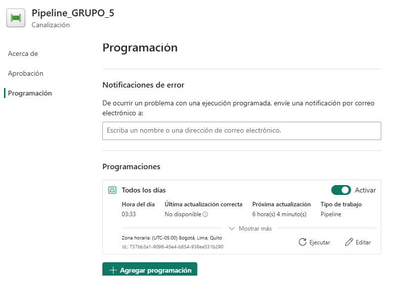
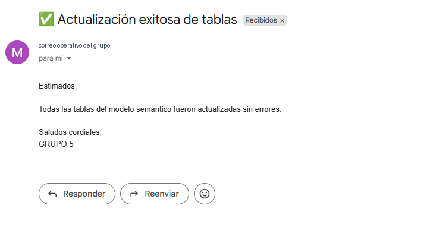
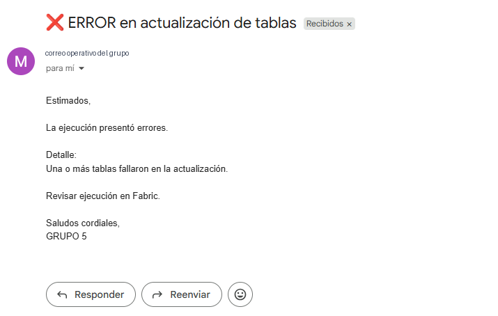
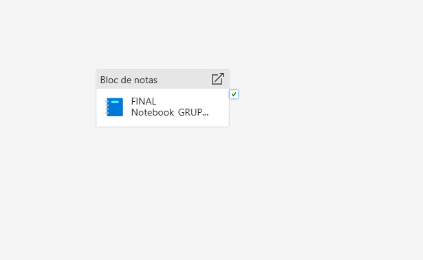
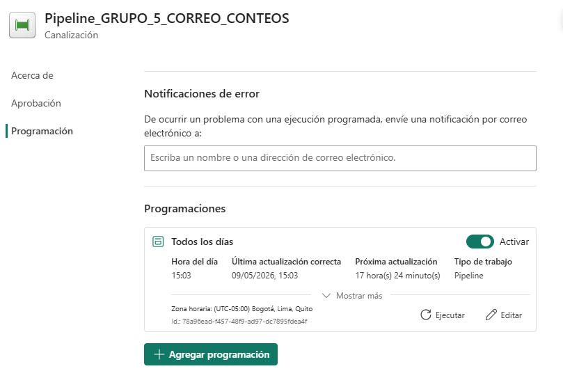

Pipeline de extracción, transformación y carga
La capa ETL permite trasladar la información comercial desde la base operacional hacia un entorno analítico en Microsoft Fabric. Para ello, se construyó un pipeline compuesto por múltiples dataflows, donde cada flujo procesa una tabla específica del modelo relacional de Inmobiliaria Mayo.
Extracción
Lectura de tablas comerciales almacenadas en Azure SQL Database, incluyendo proyectos, torres, unidades, clientes, vendedores, canales, leads y contratos.
Transformación
Preparación de los datos mediante Power Query / Dataflows, respetando nombres de campos, tipos de datos, llaves y dependencias entre entidades.
Carga
Envío de las tablas procesadas hacia Fabric Warehouse, para su posterior integración con el modelo analítico y los dashboards en Power BI.
Vista general del pipeline
El pipeline fue construido como una secuencia de flujos de datos. Primero se cargan los catálogos y entidades base, luego las tablas dependientes, y finalmente las tablas transaccionales que concentran el proceso comercial. Esta lógica reduce errores de carga y conserva la consistencia del modelo relacional.

Pipeline ETL desarrollado en Microsoft Fabric Data Factory para la carga secuencial de tablas del modelo comercial inmobiliario.
Dataflows implementados
Cada dataflow cumple la función de extraer una tabla específica desde la base relacional, navegar hacia el objeto correspondiente y configurar su destino en Fabric Warehouse. Para documentar la lógica del proceso, se muestran dos ejemplos: un catálogo simple y la tabla transaccional principal del modelo.
Dataflow de catálogo: Estado_Contrato
Este flujo evidencia la conexión con Azure SQL Database, la navegación hacia la tabla G5.Estado_Contrato y el destino configurado en Warehouse. Representa una carga de catálogo usada para clasificar el estado y vigencia de los contratos.
Dataflow transaccional: Lead_Venta
Este flujo procesa la tabla central del funnel comercial. En ella se integran el cliente, unidad de interés, asesor asignado, canal de origen, fecha del lead, costo, descuento ofrecido y precio de venta ofertado.

Dataflow de la tabla G5.Estado_Contrato: conexión a Azure SQL, navegación hacia la tabla fuente y destino en Fabric Warehouse.

Dataflow de la tabla G5.Lead_Venta: vista previa de los registros de la tabla transaccional principal del proceso comercial.
Flujo lógico de procesamiento
Catálogos base
Se cargan tablas de referencia como estados, tipos de unidad y propiedad del canal.
Entidades inmobiliarias
Se procesan proyectos, torres y unidades, respetando la relación entre proyecto, torre y unidad.
Entidades comerciales
Se cargan clientes, vendedores y canales, que explican el origen y gestión de cada oportunidad.
Tabla central
Se procesa Lead_Venta como núcleo transaccional del funnel comercial.
Control de ejecución
Se activan notebooks para notificar el resultado del proceso: actualización exitosa o error.
Notebooks de notificación
Además de los dataflows, el pipeline incorpora notebooks en Fabric para comunicar el estado final de la ejecución. Se implementaron dos rutas: una para notificar una actualización exitosa de las tablas y otra para notificar errores en caso falle alguna etapa del proceso.
Correo de éxito
Envía una notificación cuando todas las tablas del modelo semántico fueron actualizadas sin errores. Esta evidencia permite demostrar el uso de Python dentro de Fabric para tareas operativas posteriores a la carga.
Correo de error
Envía una notificación cuando una o más tablas fallan durante la actualización. El mensaje incluye una estructura para reportar el detalle del error y facilitar la revisión de la ejecución.

Notebook de notificación de éxito: envío de correo cuando la actualización de tablas finaliza correctamente.

Notebook de notificación de error: envío de correo cuando el pipeline identifica fallas en la actualización.
Programación automática y notificaciones reales
Para fortalecer el monitoreo operativo, el pipeline principal fue configurado con una programación diaria. Esta programación permite ejecutar el flujo de forma recurrente y enviar notificaciones automáticas sobre el resultado del proceso.
Frecuencia programada
El pipeline principal se programó para ejecutarse todos los días a las 03:33 a.m., hora local, dejando evidencia de operación automática dentro de Microsoft Fabric.
Monitoreo por correo
La ejecución puede finalizar con notificación de éxito o error, permitiendo revisar rápidamente si las tablas fueron actualizadas correctamente o si se requiere intervención.

Programación diaria del pipeline principal configurada en Microsoft Fabric.

Correo de notificación de éxito: confirma que la actualización de tablas finalizó correctamente.

Correo de notificación de error: alerta cuando el pipeline identifica fallas en la actualización.
Pipeline 2: control de conteo de registros
Como complemento al proceso de carga, se implementó un segundo pipeline orientado al control operativo. Este flujo ejecuta un notebook que consulta las tablas del esquema G5, calcula el número de registros por tabla y envía un correo con el consolidado de resultados.
Objetivo
Validar que las tablas cargadas tengan información disponible y que el conteo de registros pueda ser revisado de forma periódica.
Componente central
El notebook FINAL Notebook_GRUPO_5_CONTEO_REGISTROS_V6 realiza el conteo y construye el resumen para notificación.
Programación
El pipeline de conteo fue programado para ejecutarse diariamente a las 03:03 p.m., hora local.

Vista general del pipeline de conteo de registros, compuesto por un notebook de control operativo.

Programación diaria del pipeline de conteo de registros en Microsoft Fabric.
Componentes del pipeline
| Componente | Tipo | Función dentro del ETL | Dependencia principal |
|---|---|---|---|
| Estado_Torre | Catálogo | Carga los estados disponibles para las torres. | Sin dependencia previa. |
| Proyectos | Entidad base | Carga información general de cada proyecto inmobiliario. | Sin dependencia previa. |
| Torres | Entidad dependiente | Carga torres asociadas a proyectos y estados de torre. | Proyectos y Estado_Torre. |
| Estado_Unidad | Catálogo | Carga los estados comerciales de las unidades inmobiliarias. | Sin dependencia previa. |
| Tipos_Unidad | Catálogo | Carga la clasificación de unidades según características físicas. | Sin dependencia previa. |
| Unidades | Entidad dependiente | Carga las unidades disponibles, su precio, metraje, piso y estado. | Torres, Tipos_Unidad y Estado_Unidad. |
| Propiedad_Canal | Catálogo | Carga la clasificación de los canales comerciales. | Sin dependencia previa. |
| Canales | Dimensión comercial | Carga canales de captación de leads. | Propiedad_Canal. |
| Clientes | Dimensión comercial | Carga los datos de clientes registrados. | Sin dependencia previa. |
| Vendedores | Dimensión comercial | Carga los asesores comerciales responsables de la gestión del lead. | Sin dependencia previa. |
| Lead_Venta | Tabla transaccional | Consolida cliente, unidad, vendedor, canal y condiciones comerciales del lead. | Unidades, Clientes, Vendedores y Canales. |
| Estado_Contrato | Catálogo | Carga los estados posibles del contrato, incluyendo vigencia. | Sin dependencia previa. |
| Contratos | Tabla transaccional | Registra contratos o ventas asociadas a los leads. | Lead_Venta y Estado_Contrato. |
| Notebook correo éxito | Control operativo | Notifica que la actualización finalizó correctamente. | Ruta de éxito del pipeline. |
| Notebook correo error | Control operativo | Notifica fallas de actualización y facilita la revisión del proceso. | Ruta de error del pipeline. |
| Notebook conteo de registros | Control operativo | Realiza el conteo de registros por tabla y notifica los resultados obtenidos. | Pipeline 2 de monitoreo. |
Validación del proceso ETL
La validación del proceso ETL se orienta a verificar tanto la correcta ejecución de la carga como la disponibilidad de información en las tablas monitoreadas. Además del orden de ejecución del pipeline principal, se incorporó un control de conteo de registros para supervisar el estado de las tablas luego de la carga.
Orden de carga
Las tablas sin dependencias se procesan primero para evitar errores de integridad referencial.
Conteo de registros
El notebook de control obtiene el total de registros por tabla y consolida los resultados para revisión operativa.
Monitoreo y notificación
Los resultados se comunican mediante correo, facilitando el seguimiento continuo de las cargas de datos.
| Validación | Descripción | Resultado esperado |
|---|---|---|
| Disponibilidad de datos | Verifica que las tablas evaluadas presenten registros disponibles para análisis. | Tablas con registros actualizados después de la carga. |
| Integridad operativa | Identifica tablas sin registros o con cantidades inusuales de información. | Alertas o revisión de tablas con comportamiento atípico. |
| Comunicación automática | Envía el consolidado de conteos y estado de ejecución mediante notificación por correo. | Seguimiento oportuno del proceso ETL sin revisión manual constante. |
Aporte al modelo analítico
Esta capa deja la información preparada para la explotación analítica en Power BI y agrega un control operativo sobre las cargas de datos. Al consolidar los datos de leads, clientes, canales, unidades, proyectos y contratos, se habilitan indicadores como leads generados, ventas realizadas, precio de venta, costo por lead, conversión por canal, desempeño por asesor y evolución comercial por periodo.